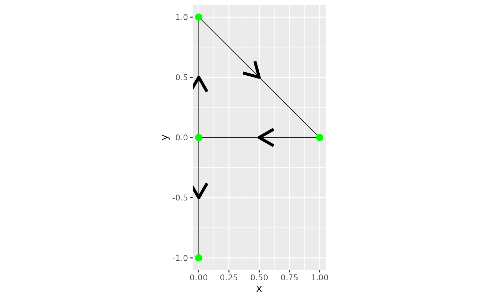
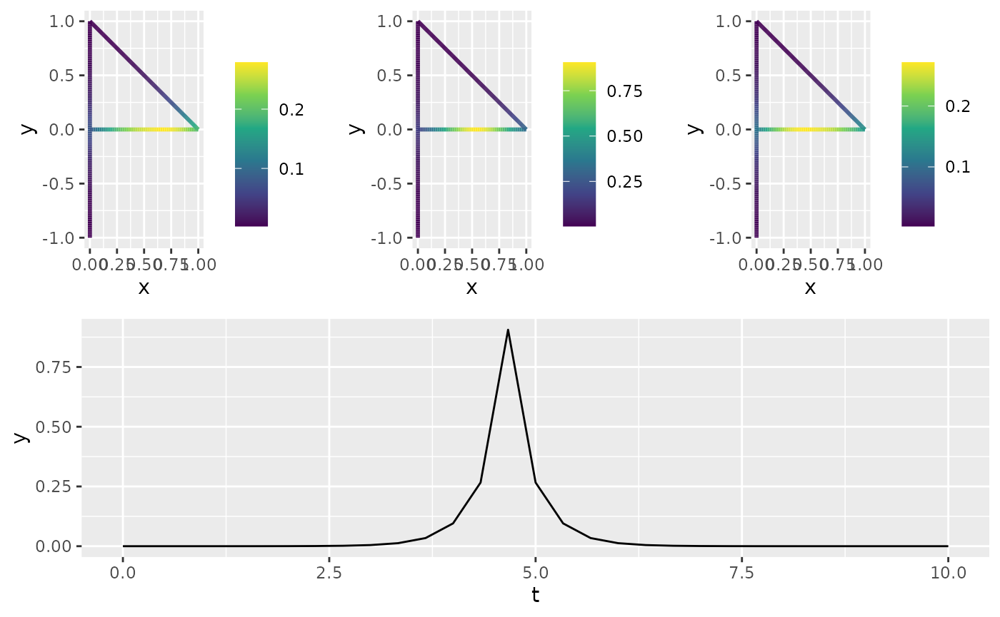

Spatio-temporal Models on Compact Metric Graphs
David Bolin, Alexandre B. Simas, and Jonas Wallin
Created: 2024-10-23. Last modified: 2025-04-08.
Source:vignettes/spacetime.Rmd
spacetime.RmdIntroduction
The MetricGraph package, combined with the
rSPDE package, implements the following spatio-temporal
model on compact metric graphs:
where
is a temporal interval, and
is a compact metric graph. Here,
is a spatial range parameter,
is a drift parameter, and
is a
-Wiener
process with spatial covariance operator
,
where
is a variance parameter. The model has two smoothness parameters,
and
,
which are assumed to be integers. This model generalizes the
spatio-temporal models introduced in Lindgren et al. (2024), where the
generalization is to allow for drift and to allow for metric graphs as
spatial domains. The model is implemented using a finite element
discretization of the corresponding precision operator:
in both space and time, following a
similar discretization to Lindgren et al. (2024). This
parameterization of the drift term, using
in place of the standard
,
is chosen to simplify the enforcement of theoretical bounds on the range
of
,
ensuring that the equation remains well-posed and also providing
numerical stability for finite-dimensional approximations.
Implementation Details
The function spacetime.operators(), provided by the
rSPDE package, constructs the spatio-temporal precision
matrix for models on metric graphs and enables interaction with the
MetricGraph package. This function requires inputs that
define the spatial structure via a MetricGraph object and
the temporal domain through a vector of discretized time points. Key
parameters like kappa and sigma control the
range and variance of the field, respectively, whereas
alpha and beta govern the smoothness of the
field.
This function processes these inputs to create a
spacetime.operators object containing the discretized
precision matrix, covariance structure, and essential methods for model
evaluation, simulation, and kriging on metric graphs.
library(sp)
library(rSPDE)
library(MetricGraph)
# Define graph edges
line1 <- Line(rbind(c(1, 0), c(0, 0)))
line2 <- Line(rbind(c(0, 0), c(0, 1)))
line3 <- Line(rbind(c(0, 0), c(0, -1)))
line4 <- Line(rbind(c(0, 1), c(1, 0)))
lines <- sp::SpatialLines(list(
Lines(list(line1), ID="1"),
Lines(list(line2), ID="2"),
Lines(list(line3), ID="3"),
Lines(list(line4), ID="4")
))
# Initialize metric graph
graph <- metric_graph$new(edges = lines)
graph$plot(direction = TRUE)
# Create finite element mesh and compute matrices
h <- 0.01
graph$build_mesh(h = h)
graph$compute_fem()
# Define model parameters and construct spatio-temporal operator
t <- seq(from = 0, to = 10, length.out = 31)
kappa <- 5
sigma <- 10
gamma <- 0.1
rho <- 0.3
alpha <- 1
beta <- 1
op <- spacetime.operators(graph = graph, time = t,
kappa = kappa, sigma = sigma, alpha = alpha,
beta = beta, rho = rho, gamma = gamma)
op$plot_covariances(t.ind = 15, s.ind = 50, t.shift = c(-1, 0, 1))
#> TableGrob (2 x 1) "arrange": 2 grobs
#> z cells name grob
#> 1 1 (1-1,1-1) arrange gtable[arrange]
#> 2 2 (2-2,1-1) arrange gtable[layout]
#> TableGrob (2 x 1) "arrange": 2 grobs
#> z cells name grob
#> 1 1 (1-1,1-1) arrange gtable[arrange]
#> 2 2 (2-2,1-1) arrange gtable[layout]Simulating Observations and Estimating Parameters
# Simulate data
x <- simulate(op, nsim = 1)
n.obs <- 500
PtE <- cbind(sample(1:graph$nE, size = n.obs, replace = TRUE), runif(n.obs))
t.obs <- max(t) * runif(n.obs)
# including vertices of degree 1 in the A matrix
A <- op$make_A(PtE, t.obs, include_deg1 = TRUE)
sigma.e <- 0.01
Y <- as.vector(A %*% x + sigma.e * rnorm(n.obs))
df <- data.frame(y = as.matrix(Y), edge_number = PtE[,1],
distance_on_edge = PtE[,2],
time = t.obs)
graph$add_observations(data = df, normalized=TRUE,
group = "time")
# Estimate model parameters using rspde_lme
res <- rspde_lme(y ~ 1, loc_time = "time",
model = op,
parallel = TRUE)
# Display summary
summary(res)
#>
#> Latent model - Spatio-temporal with alpha = 1 , beta = 1
#>
#> Call:
#> rspde_lme(formula = y ~ 1, loc_time = "time", model = op, parallel = TRUE)
#>
#> Fixed effects:
#> Estimate Std.error z-value Pr(>|z|)
#> (Intercept) 0.01252 0.01420 0.882 0.378
#>
#> Random effects:
#> Estimate Std.error z-value
#> kappa 5.08187 0.31786 15.988
#> sigma 10.60853 1.15784 9.162
#> gamma 0.10777 0.01272 8.474
#> rho 0.18580 20.44590 0.009
#> alpha (fixed) 1.00000 NA NA
#> beta (fixed) 1.00000 NA NA
#>
#> Measurement error:
#> Estimate Std.error z-value
#> std. dev 0.011318 0.002192 5.164
#> ---
#> Signif. codes: 0 '***' 0.001 '**' 0.01 '*' 0.05 '.' 0.1 ' ' 1
#>
#> Log-Likelihood: -38.30923
#> Number of function calls by 'optim' = 70
#> Optimization method used in 'optim' = L-BFGS-B
#>
#> Time used to: fit the model = 4.17657 mins
#> set up the parallelization = 7.94929 secs
# Compare estimated results with true values
results <- data.frame(kappa = c(kappa, res$coeff$random_effects[1]),
sigma = c(sigma, res$coeff$random_effects[2]),
gamma = c(gamma, res$coeff$random_effects[3]),
rho = c(rho, res$coeff$random_effects[4]),
sigma.e = c(sigma.e, res$coeff$measurement_error),
intercept = c(0, res$coeff$fixed_effects),
row.names = c("True", "Estimate"))
print(results)
#> kappa sigma gamma rho sigma.e intercept
#> True 5.000000 10.00000 0.1000000 0.3000000 0.01000000 0.00000000
#> Estimate 5.081869 10.60853 0.1077685 0.1858043 0.01131791 0.01251826inlabru Implementation
We now proceed with the inlabru implementation. First, we create a temporal mesh:
library(INLA)
library(inlabru)
library(fmesher)
mesh_time <- fm_mesh_1d(t)
st_graph <- rspde.spacetime(mesh_space = graph,
mesh_time = mesh_time,
alpha = 1, beta = 1)We define the data object by using the
graph_data_rspde() function with bru set to
TRUE:
st_data_bru <- graph_data_rspde(st_graph, bru = TRUE)Next, we define the model component for inlabru, where we pass a list
with two elements: space, which is given by the spatial
locations (cbind(.edge_number, .distance_on_edge)), and
time, which is given by the time points.
cmp_graph <- y ~ 1 + field(list(
space = cbind(.edge_number, .distance_on_edge),
time = time),
model = st_graph)Fit the model by passing st_data_bru to the
data argument:
bru_fit_graph <- bru(cmp_graph, data = st_data_bru[["data"]])Compare the estimated parameters with the true values:
param_st <- transform_parameters_spacetime(bru_fit_graph$summary.hyperpar$mean[2:6],
st_graph)
results <- data.frame(kappa = c(kappa, param_st[[1]]),
sigma = c(sigma, param_st[[2]]),
gamma = c(gamma, param_st[[3]]),
rho = c(rho, param_st[[4]]),
sigma.e = c(sigma.e, sqrt(1/bru_fit_graph$summary.hyperpar$mean[1])),
intercept = c(0, bru_fit_graph$summary.fixed$mean),
row.names = c("True", "Estimate"))
print(results)
#> kappa sigma gamma rho sigma.e intercept
#> True 5.000000 10.00000 0.1000000 0.3000000 0.01000000 0.00000000
#> Estimate 5.130936 10.79189 0.1087089 0.1206256 0.01042847 0.01265854Fitting Model with Replicates in inlabru
We will now simulate from the same model, but this time with replicates. We will assume we have 10 replicates.
Let us start by simulating the field:
n_rep = 10
x <- simulate(op, nsim = n_rep)
n.obs <- 500
PtE <- cbind(sample(1:graph$nE, size = n.obs, replace = TRUE), runif(n.obs))
t.obs <- max(t) * runif(n.obs)
A <- op$make_A(PtE, t.obs, include_deg1 = TRUE)
sigma.e <- 0.01
Y <- as.vector(A %*% x + sigma.e * rnorm(n.obs))
df <- data.frame(y = as.matrix(Y), edge_number = PtE[,1],
distance_on_edge = PtE[,2], time = t.obs,
repl = rep(1:n_rep, each = n.obs))
graph_rep <- graph$clone()We add the observations into the metric graph object. Observe that
this time we have two grouping variables, time and
repl. We need grouping variables whenever we want to allow
the storage of different observations at the exact same location.
graph_rep$add_observations(data = df, normalized=TRUE,
clear_obs = TRUE, group = c("time", "repl"))
#> Adding observations...
#> Assuming the observations are normalized by the length of the edge.We now create the rSPDE model object:
st_graph_repl <- rspde.spacetime(mesh_space = graph_rep,
mesh_time = mesh_time,
alpha = 1, beta = 1)We create the data object by using the
graph_data_rspde() function, setting bru to
TRUE and specifying repl_col:
st_data_bru_repl <- graph_data_rspde(st_graph_repl,
repl = ".all",
repl_col = "repl",
bru = TRUE)Next, we create the inlabru component by also passing
the replicate argument with the repl element of the object
returned by graph_data_rspde():
cmp_graph_repl <- y ~ 1 + field(list(space = cbind(.edge_number, .distance_on_edge),
time = time),
model = st_graph_repl,
replicate = st_data_bru_repl[["repl"]]
)Fit the model passing st_data_bru_repl to the
data argument:
bru_fit_graph_repl <- bru(cmp_graph_repl,
data = st_data_bru_repl[["data"]])Compare the estimated parameters with the true values:
param_st_repl <- transform_parameters_spacetime(
bru_fit_graph_repl$summary.hyperpar$mean[2:6],
st_graph_repl)
results_repl <- data.frame(kappa = c(kappa, param_st_repl[[1]]),
sigma = c(sigma, param_st_repl[[2]]),
gamma = c(gamma, param_st_repl[[3]]),
rho = c(rho, param_st_repl[[4]]),
sigma.e = c(sigma.e, sqrt(1/bru_fit_graph_repl$summary.hyperpar$mean[1])),
intercept = c(0, bru_fit_graph_repl$summary.fixed$mean),
row.names = c("True", "Estimate"))
print(results_repl)
#> kappa sigma gamma rho sigma.e intercept
#> True 5.00000 10.00000 0.10000000 0.3000000 0.01000000 0.0000000
#> Estimate 5.10552 10.08678 0.09665989 0.3960881 0.01105039 0.0091852Example: Setting bounded_rho = FALSE
The bounded_rho parameter in
rspde.spacetime() ensures that
stays within a range that guarantees numerical stability and
well-posedness. However, in some cases, better fits can be achieved by
setting bounded_rho = FALSE. Below, we show how to modify
the model to handle this case.
Using rspde_lme()
Here we set bounded_rho = FALSE when creating the
spatio-temporal operator and fit the model using
rspde_lme():
# Create the spatio-temporal operator with bounded_rho = FALSE
op_unbounded <- spacetime.operators(
graph = graph,
time = t,
kappa = kappa,
sigma = sigma,
alpha = alpha,
beta = beta,
rho = rho,
gamma = gamma,
bounded_rho = FALSE
)
# Fit the model using rspde_lme
res <- rspde_lme(y ~ 1, loc_time = "time", model = op_unbounded, parallel = TRUE)Comparing Results
# Compare results for rspde_lme
results <- data.frame(
kappa = c(kappa, res$coeff$random_effects[1]),
sigma = c(sigma, res$coeff$random_effects[2]),
gamma = c(gamma, res$coeff$random_effects[3]),
rho = c(rho, res$coeff$random_effects[4]),
sigma.e = c(sigma.e, res$coeff$measurement_error),
intercept = c(0, res$coeff$fixed_effects),
row.names = c("True", "Estimate")
)
print(results)
#> kappa sigma gamma rho sigma.e intercept
#> True 5.00000 10.00000 0.100000 0.3000000 0.01000000 0.00000000
#> Estimate 5.08243 10.61114 0.107797 0.1840097 0.01132673 0.01250813Using inlabru
Here we set bounded_rho = FALSE when creating the
spatio-temporal operator and prepare data for inlabru:
# Create the spatio-temporal operator for inlabru
st_graph_unbounded <- rspde.spacetime(
mesh_space = graph,
mesh_time = mesh_time,
alpha = 1,
beta = 1,
bounded_rho = FALSE
)
# Prepare data for inlabru
st_data_bru_unbounded <- graph_data_rspde(
st_graph_unbounded,
bru = TRUE
)
# Define inlabru component with unbounded rho
cmp_graph_unbounded <- y ~ 1 + field(
list(
space = cbind(.edge_number, .distance_on_edge),
time = time
),
model = st_graph_unbounded
)Fitting the Model with inlabru
bru_fit_graph_unbounded <- bru(cmp_graph_unbounded, data = st_data_bru_unbounded[["data"]])Comparing Results
# Transform parameters and compare results
param_st_unbounded <- transform_parameters_spacetime(
bru_fit_graph_unbounded$summary.hyperpar$mean[2:6],
st_graph_unbounded
)
results_unbounded <- data.frame(
kappa = c(kappa, param_st_unbounded[[1]]),
sigma = c(sigma, param_st_unbounded[[2]]),
gamma = c(gamma, param_st_unbounded[[3]]),
rho = c(rho, param_st_unbounded[[4]]),
sigma.e = c(sigma.e, sqrt(1 / bru_fit_graph_unbounded$summary.hyperpar$mean[1])),
intercept = c(0, bru_fit_graph_unbounded$summary.fixed$mean),
row.names = c("True", "Estimate")
)
print(results_unbounded)
#> kappa sigma gamma rho sigma.e intercept
#> True 5.000000 10.00000 0.1000000 0.3000000 0.01000000 0.00000000
#> Estimate 5.104724 10.72363 0.1086646 0.1821977 0.01010588 0.01264745INLA Implementation (Added for Completeness)
Note: While it is possible to fit the model directly using INLA, we strongly recommend utilizing the inlabru implementation. Its higher-level interface and enhanced functionalities provide a more user-friendly and robust experience, especially for those with less experience in advanced modeling.
Fitting the Model with INLA
First, we create the temporal mesh and spatio-temporal graph:
library(INLA)
library(fmesher)
mesh_time <- fm_mesh_1d(t)
st_graph <- rspde.spacetime(mesh_space = graph,
mesh_time = mesh_time,
alpha = 1, beta = 1)We define the data object by using the
graph_data_rspde() function with bru set to
FALSE:
st_data_inla <- graph_data_rspde(st_graph, name = "field", time = "time", bru = FALSE)Now we create the inla.stack object. The
st_data_inla contains the dataset as the data
component, the index as the index component, and the
so-called A matrix as the basis component. We
will now create the stack using these components:
stk.dat <- inla.stack(
data = st_data_inla[["data"]],
A = st_data_inla[["basis"]],
effects =
c(st_data_inla[["index"]],
list(Intercept = 1))
)Finally, we create the formula object and fit the model:
f_st <- y ~ -1 + Intercept + f(field, model = st_graph)
rspde_fit <- inla(f_st, data = inla.stack.data(stk.dat),
control.inla = list(int.strategy = "eb"),
control.predictor = list(A = inla.stack.A(stk.dat), compute = TRUE),
num.threads = "1:1"
)Let us compare the fitted values with the true values:
param_st <- transform_parameters_spacetime(rspde_fit$summary.hyperpar$mean[2:6],
st_graph)
results <- data.frame(kappa = c(kappa, param_st[[1]]),
sigma = c(sigma, param_st[[2]]),
gamma = c(gamma, param_st[[3]]),
rho = c(rho, param_st[[4]]),
sigma.e = c(sigma.e, sqrt(1/rspde_fit$summary.hyperpar$mean[1])),
intercept = c(0, rspde_fit$summary.fixed$mean),
row.names = c("True", "Estimate"))
print(results)
#> kappa sigma gamma rho sigma.e intercept
#> True 5.000000 10.0000 0.1000000 0.3000000 0.01000000 0.0000000
#> Estimate 5.008921 10.3791 0.1064988 0.1226474 0.01040961 0.0124093Fitting Model with Replicates in INLA
We will now simulate from the same model, but this time with replicates.
Let us create the data object for INLA:
st_data_inla_repl <- graph_data_rspde(st_graph_repl,
repl = ".all",
repl_col = "repl",
time = "time",
bru = FALSE)Let us now create the corresponding inla.stack
object:
st_dat_rep <- inla.stack(
data = st_data_inla_repl[["data"]],
A = st_data_inla_repl[["basis"]],
effects = c(st_data_inla_repl[["index"]],
list(Intercept = 1))
)Now, we can create the formula object and fit the model:
f_st_rep <-
y ~ -1 + Intercept + f(field,
model = st_graph_repl,
replicate = field.repl
)
rspde_fit_rep <-
inla(f_st_rep,
data = inla.stack.data(st_dat_rep),
control.predictor =
list(A = inla.stack.A(st_dat_rep))
)Let us compare the fitted values with the true values:
param_st_rep <- transform_parameters_spacetime(rspde_fit_rep$summary.hyperpar$mean[2:6],
st_graph)
results_inla_repl <- data.frame(kappa = c(kappa, param_st_rep[[1]]),
sigma = c(sigma, param_st_rep[[2]]),
gamma = c(gamma, param_st_rep[[3]]),
rho = c(rho, param_st_rep[[4]]),
sigma.e = c(sigma.e, sqrt(1/rspde_fit_rep$summary.hyperpar$mean[1])),
intercept = c(0, rspde_fit_rep$summary.fixed$mean),
row.names = c("True", "Estimate"))
print(results_inla_repl)
#> kappa sigma gamma rho sigma.e intercept
#> True 5.000000 10.00000 0.1000000 0.3000000 0.01000000 0.00000000
#> Estimate 5.156459 10.44795 0.1005351 0.2333613 0.01083889 0.01076759